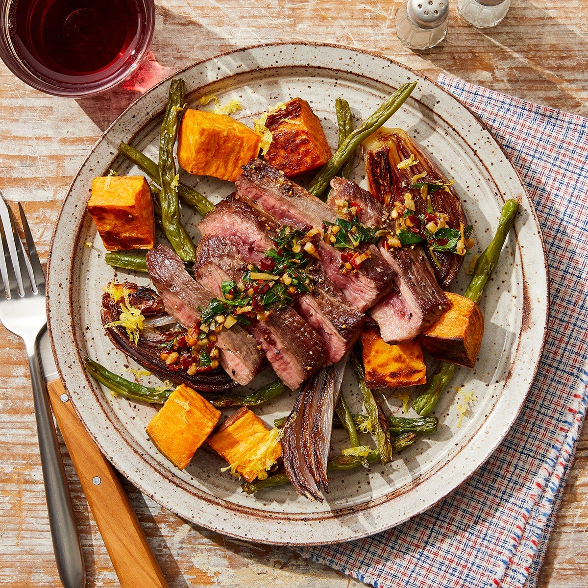
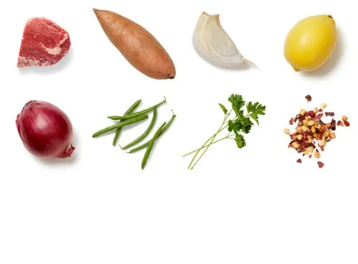
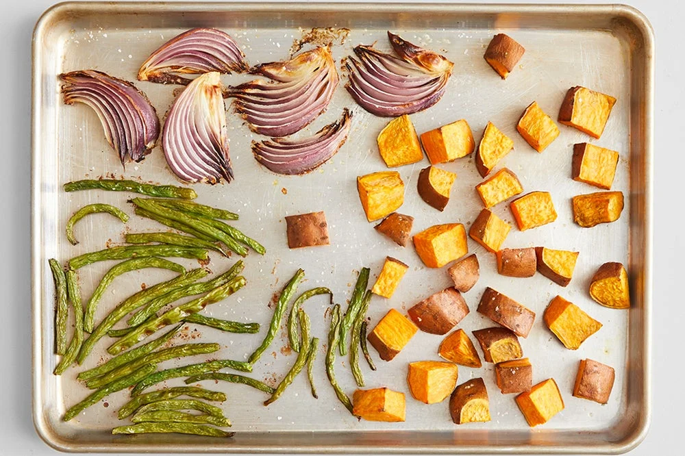
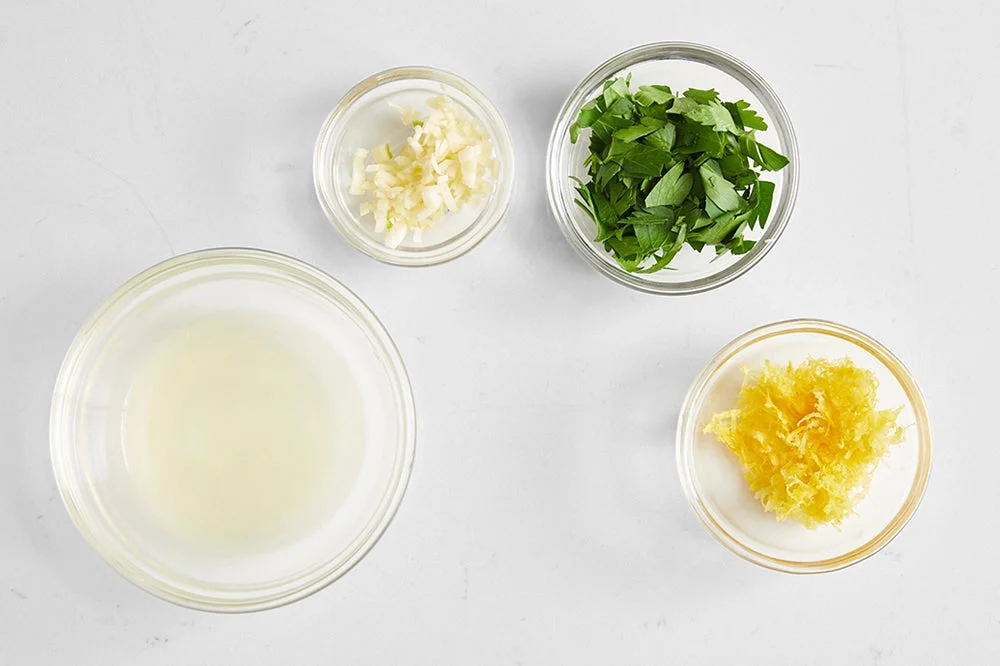
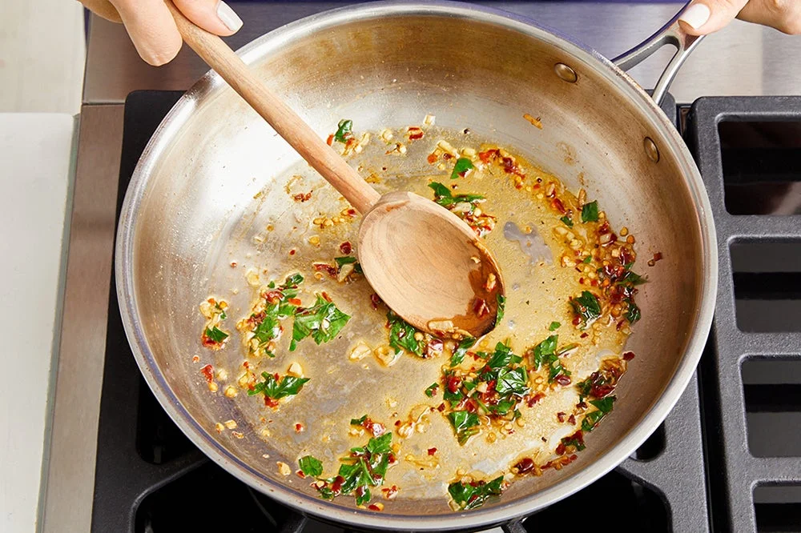

Seared Steak & Lemon Salsa Verde
with Roasted Vegetables

Description
Seared ribeye steak with aromatic flavor from a warm salsa verde sauce -
made quickly in a pan with garlic, parsley, lemon juice, and a dash of red
peppers.
Complimented with roasted vegetable medley of red onions, green beans, and
sweet potato.
Prep time: 35 minutes
2 servings
600 calories
Ingredients

- 1 8-oz ribeye steak
- 1 lb sweet potato
- 2 cloves garlic
- 1 lemon
- 1 red onion
- 6 oz green beans
- 1 bunch parsley
- ¼ tsp crushed red pepper flakes
Steps
- Prepare and roast the vegetables in oven:
- Preheat oven to 450°F.
- Wash and dry the fresh produce.
- Medium dice sweet potatoes.
- Cut off and discard stem ends of the green beans.
- Cut onions into 1-inch wedges.
- Place the prepared vegetables on a sheet pan.
-
Drizzle the veggies with olive oil and season with salt & pepper.
-
Roast the veggies for ~22 minutes or until tender and
browned.
- Remove from the oven.

- Prepare the remaining ingredients:
- While veggies are cooking in oven, peel and chop the garlic.
- Zest the lemon to get 1 teaspoon.
- Halve the lemon and squeeze the juice into a bowl.
- Roughly chop the parsley leaves and stems.

- Cook the steak:
- Pat the steak dry, salt & pepper both sides.
-
In medium pan, heat 2 tsp of olive oil on medium
heat.
-
Cook the steak for 3-5 minutes for medium-rare or
more to your liking.
-
Transfer steak to a cutting board, leave browned bits (fond) in the
pan.

- Make the salsa verde sauce:
-
In the pan of reserved fond,
heat 2 tsp of olive oil on medium heat.
-
Add the chopped garlic, season with salt & pepper. Cook
(~1 minute), stirring constantly, until slightly
softened and browned.
-
Turn off heat. Add the chopped parsley, lemon juice, and as much of
the red pepper as you like. Stir to combine. Taste and add more salt &
pepper as wanted.

- Finish and serve your dish:
- Add lemon zest to roasted vegetables, toss to coat.
- Cut steak into 1 inch slices.
-
Place the cut steak center dish, top it with salsa verde sauce, and
surround it with the vegetables. Enjoy!